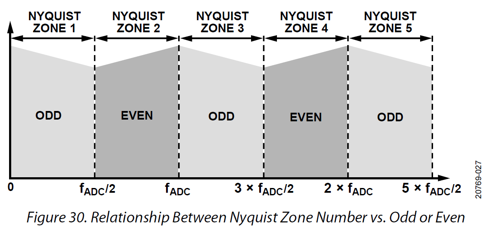
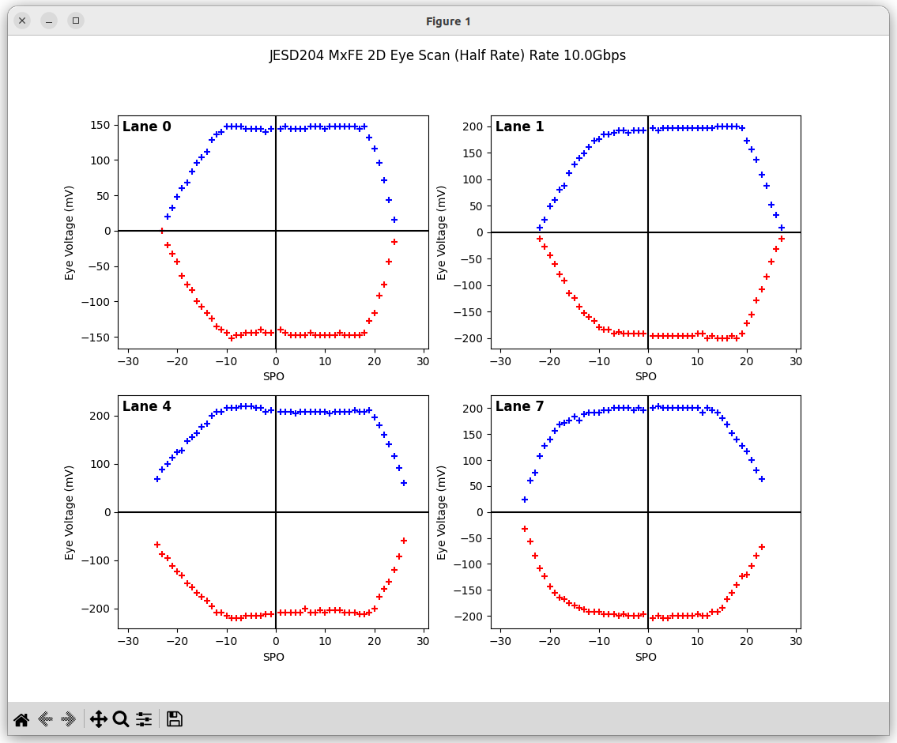

AD9081 MxFE Linux Driver¶
Supported Devices¶
Supported Boards¶
User Guides¶
Supported HDL Cores¶
Description¶
The mixed signal front end (MxFE®) is a high integration devicewith a 16-bit, 12 GSPS maximum sample rate radio frequency (RF) digital-to-analog converter (DAC) core and a 12-bit, 4 GSPS rate RF analog-to-digital converter (ADC) core. The AD9081 features a 16-lane, 24.75 Gbps JESD204C or 15.5 Gbps JESD204B data transceiver port, an on-chip clock multiplier, and digital signal processing capability targeted at single-and dual-band direct-to-RF radio applications.
The AD9081 supports four transmitter channels and four receiver channels with a 4D4A configuration. The receiver ADC channels can be shared with observation channels in time division duplex(TDD) operating mode. The AD9081 directly addresses the emerging base station applications with high integration and common platform requirements. The device has flexible inter-polation/decimation configurations that enable direct-to-RF multiband radio applications. AD9081 supports a complex transmit input data rate up to 6 GSPS and a receive output data rate in single-channel mode up to 4 GSPS. The maximum radio band spacing supported in multichannel modes is 1.2 GHz. AD9081 features a bypassable interpolator and decimator for achieving ultra wideband capability with low latency loop back and frequency hopping modes targeted at phase array radar system and electronic warfare jammer applications.
For more information about the AD9081, contact Analog Devices, Inc., at: MxFEsupport@analog.com.
Source Code¶
Status¶
| Source | Mainlined? |
|---|---|
| drivers/iio/adc/ad9081.c | No |
Files¶
| Function | File |
|---|---|
| driver | drivers/iio/adc/ad9081.c |
| API driver | drivers/iio/adc/ad9081 |
Example device trees¶
Enabling Linux driver support¶
Configure kernel with “make menuconfig” (alternatively use “make xconfig” or “make qconfig”)
Note
The ADRV9009 driver depends on CONFIG_SPI
Adding Linux driver support¶
Configure kernel with “make menuconfig” (alternatively use “make xconfig” or “make qconfig”)
Linux Kernel Configuration
Device Drivers --->
<*> JESD204 High-Speed Serial Interface Framework
<*> Industrial I/O support --->
--- Industrial I/O support
-*- Enable ring buffer support within IIO
-*- Industrial I/O lock free software ring
-*- Enable triggered sampling support
*** Analog to digital converters ***
[--snip--]
-*- Analog Devices High-Speed AXI ADC driver core
<*> Analog Devices AD9081 and similar Mixed Signal Front End (MxFE)
< > Analog Devices AD9208 and similar high speed ADCs
< > Analog Devices AD9361, AD9364 RF Agile Transceiver driver
< > Analog Devices AD9371 RF Transceiver driver
< > Analog Devices ADRV9009/ADRV9008 RF Transceiver driver
< > Analog Devices AD6676 Wideband IF Receiver driver
< > Analog Devices AD9467, AD9680, etc. high speed ADCs
[--snip--]
Frequency Synthesizers DDS/PLL --->
Direct Digital Synthesis --->
<*> Analog Devices CoreFPGA AXI DDS driver
Clock Generator/Distribution --->
< > Analog Devices AD9508 Clock Fanout Buffer
< > Analog Devices AD9523 Low Jitter Clock Generator
< > Analog Devices AD9528 Low Jitter Clock Generator
< > Analog Devices AD9548 Network Clock Generator/Synchronizer
< > Analog Devices AD9517 12-Output Clock Generator
<*> Analog Devices HMC7044, HMC7043 Clock Jitter Attenuator with JESD204B
< > Analog Devices LTC6952 Clock Ultralow Jitter with JESD204B/C
<*> JESD204 High-Speed Serial Interface Support --->
--- JESD204 High-Speed Serial Interface Support
< > Altera Arria10 JESD204 PHY Support
<*> Analog Devices AXI ADXCVR PHY Support
< > Generic AXI JESD204B configuration driver
<*> Analog Devices AXI JESD204B TX Support
<*> Analog Devices AXI JESD204B RX Support
Device tree customization¶
The AD9081 Linux IIO device driver is configured and customized using device tree, a simple tree structure of nodes and properties. Properties are key-value pairs, and node may contain both properties and child nodes.
The top device node of the AD9081/82 contains common and device specific attributes.
Under the top node, there are two child-nodes (adi,tx-dacs and adi,rx-adcs).
In case of DAC or ADC only operation, both nodes are required and must contain at least the adi,dac-frequency-hz and respectively the adi,adc-frequency-hz property. However omitting the child nodes will disable this ADC/DAC data path.
&spi {
trx0_ad9081: ad9081@0 {
// Device common properties
adi,tx-dacs {
// Tx/DAC properties and child-nodes
};
adi,rx-adcs {
// Rx/ADC properties and child-nodes
};
};
};
Each of these child nodes handle certain aspects of either the digital-to-analog converter core side or the analog-to-digital converter side of the Mixed Signal Frontend (MxFE®) These child-nodes again contain ADC or DAC side common attributes. Such as the ADC/DAC frequency. But also, three child-nodes to customize the main data paths, the channelizers and the serial JESD204 interfaces.
adi,rx-adcs {
adi,main-data-paths {
};
adi,channelizer-paths {
};
adi,jesd-links {
};
};
The
adi,main-data-pathsnode iterates the used ADCs or DACs together with its default/dedicated CDDCs and CDUCs. Each of these nodes have in return again properties to configure the default NCO frequencies, modes, decimation, etc. (A list of supported properties/attributes can be found below.)The second mandatory node is the
adi,channelizer-pathsnode. The utilized channelizers FDDCs and FDUCs are described in here, which are always related to the main data paths. Therefore, the main data path child-nodes contain a property (adi,crossbar-select) of a device node containing a phandle to the FDUC or FDDC that it is attached to.The last mandatory child-node is the
adi,jesd-linksnode. This node contains up to two (single/dual link) child-nodes, one for each link.
adi,main-data-paths {
ad9081_dac0: dac@0 {
};
ad9081_dac1: dac@1 {
};
ad9081_dac2: dac@2 {
};
ad9081_dac3: dac@3 {
};
};
adi,channelizer-paths {
ad9081_tx_fddc_chan0: channel@0 {
};
ad9081_tx_fddc_chan1: channel@1 {
};
};
adi,jesd-links {
ad9081_tx_jesd_l0: link@0 {
};
};
Device Tree Example¶
&spi {
trx0_ad9081: ad9081@0 {
#address-cells = <1>;
#size-cells = <0>;
compatible = "adi,ad9081";
reg = <0>;
spi-max-frequency = <5000000>;
/* Clocks */
clocks = <&hmc7044 2>;
clock-names = "dev_clk";
clock-output-names = "rx_sampl_clk", "tx_sampl_clk";
#clock-cells = <1>;
jesd204-device;
#jesd204-cells = <2>;
jesd204-top-device = <0>; /* This is the TOP device */
jesd204-link-ids = <FRAMER_LINK0_RX DEFRAMER_LINK0_TX>;
jesd204-inputs =
<&axi_ad9081_core_rx 0 FRAMER_LINK0_RX>,
<&axi_ad9081_core_tx 0 DEFRAMER_LINK0_TX>;
adi,tx-dacs {
#size-cells = <0>;
#address-cells = <1>;
adi,dac-frequency-hz = /bits/ 64 <6200000000>;
adi,main-data-paths {
#address-cells = <1>;
#size-cells = <0>;
adi,interpolation = <2>;
ad9081_dac0: dac@0 {
reg = <0>;
adi,crossbar-select = <&ad9081_tx_fddc_chan0>;
adi,nco-frequency-shift-hz = /bits/ 64 <100000000>; /* 100 MHz */
};
ad9081_dac1: dac@1 {
reg = <1>;
adi,crossbar-select = <&ad9081_tx_fddc_chan1>;
adi,nco-frequency-shift-hz = /bits/ 64 <200000000>; /* 200 MHz */
};
ad9081_dac2: dac@2 {
reg = <2>;
adi,crossbar-select = <&ad9081_tx_fddc_chan0>, <&ad9081_tx_fddc_chan1>; /* All 4 channels @ dac2 */
adi,nco-frequency-shift-hz = /bits/ 64 <300000000>; /* 300 MHz */
};
ad9081_dac3: dac@3 {
reg = <3>;
adi,crossbar-select = <&ad9081_tx_fddc_chan0>, <&ad9081_tx_fddc_chan1>; /* All 4 channels @ dac2 */
adi,nco-frequency-shift-hz = /bits/ 64 <400000000>; /* 400 MHz */
};
};
adi,channelizer-paths {
#address-cells = <1>;
#size-cells = <0>;
adi,interpolation = <2>;
ad9081_tx_fddc_chan0: channel@0 {
reg = <0>;
adi,gain = <0>;
adi,nco-frequency-shift-hz = /bits/ 64 <50000000>;
};
ad9081_tx_fddc_chan1: channel@1 {
reg = <1>;
adi,gain = <0>;
adi,nco-frequency-shift-hz = /bits/ 64 <100000000>;
};
};
adi,jesd-links {
#size-cells = <0>;
#address-cells = <1>;
ad9081_tx_jesd_l0: link@0 {
#address-cells = <1>;
#size-cells = <0>;
reg = <0>;
adi,converter-select = <&ad9081_tx_fddc_chan0 0>, <&ad9081_tx_fddc_chan0 1>, /* FIXME not supported */
<&ad9081_tx_fddc_chan1 0>, <&ad9081_tx_fddc_chan1 1>;
adi,logical-lane-mapping = /bits/ 8 <0 1 2 3 4 5 6 7>;
adi,link-mode = <17>; /* JESD Quick Configuration Mode */
adi,subclass = <1>; /* JESD SUBCLASS 0,1,2 */
adi,version = <1>; /* JESD VERSION 0=204A,1=204B,2=204C */
adi,dual-link = <0>; /* JESD Dual Link Mode */
adi,converters-per-device = <4>; /* JESD M */
adi,octets-per-frame = <1>; /* JESD F */
adi,frames-per-multiframe = <32>; /* JESD K */
adi,converter-resolution = <16>; /* JESD N */
adi,bits-per-sample = <16>; /* JESD NP' */
adi,control-bits-per-sample = <0>; /* JESD CS */
adi,lanes-per-device = <8>; /* JESD L */
adi,samples-per-converter-per-frame = <1>; /* JESD S */
adi,high-density = <0>; /* JESD HD */
};
};
};
adi,rx-adcs {
#size-cells = <0>;
#address-cells = <1>;
adi,adc-frequency-hz = /bits/ 64 <3100000000>;
adi,main-data-paths {
#address-cells = <1>;
#size-cells = <0>;
ad9081_adc0: adc@0 {
reg = <0>;
adi,decimation = <2>;
adi,nco-frequency-shift-hz = /bits/ 64 <70000000>;
//adi,crossbar-select = <&ad9081_rx_fddc_chan0>, <&ad9081_rx_fddc_chan2>; /* Static for now */
};
ad9081_adc1: adc@1 {
reg = <1>;
adi,decimation = <2>;
adi,nco-frequency-shift-hz = /bits/ 64 <150000000>;
//adi,crossbar-select = <&ad9081_rx_fddc_chan1>, <&ad9081_rx_fddc_chan3>; /* Static for now */
};
};
adi,channelizer-paths {
#address-cells = <1>;
#size-cells = <0>;
ad9081_rx_fddc_chan0: channel@0 {
reg = <0>;
adi,decimation = <1>;
adi,gain = <0>;
adi,nco-frequency-shift-hz = /bits/ 64 <30000000>;
};
ad9081_rx_fddc_chan1: channel@1 {
reg = <1>;
adi,decimation = <1>;
adi,gain = <0>;
adi,nco-frequency-shift-hz = /bits/ 64 <60000000>;
};
};
adi,jesd-links {
#size-cells = <0>;
#address-cells = <1>;
ad9081_rx_jesd_l0: link@0 {
reg = <0>;
adi,converter-select = <&ad9081_rx_fddc_chan0 0>, <&ad9081_rx_fddc_chan0 1>,
<&ad9081_rx_fddc_chan1 0>, <&ad9081_rx_fddc_chan1 1>;
adi,logical-lane-mapping = /bits/ 8 <0 1 2 3 4 5 6 7>;
adi,link-mode = <18>; /* JESD Quick Configuration Mode */
adi,subclass = <1>; /* JESD SUBCLASS 0,1,2 */
adi,version = <1>; /* JESD VERSION 0=204A,1=204B,2=204C */
adi,dual-link = <0>; /* JESD Dual Link Mode */
adi,converters-per-device = <4>; /* JESD M */
adi,octets-per-frame = <1>; /* JESD F */
adi,frames-per-multiframe = <32>; /* JESD K */
adi,converter-resolution = <16>; /* JESD N */
adi,bits-per-sample = <16>; /* JESD NP' */
adi,control-bits-per-sample = <0>; /* JESD CS */
adi,lanes-per-device = <8>; /* JESD L */
adi,samples-per-converter-per-frame = <1>; /* JESD S */
adi,high-density = <0>; /* JESD HD */
};
};
};
};
};
General IIO and driver conventions¶
Controlling the MxFE is done via the IIO sysfs interface. For convenience users can use libiio and its various programming langue bindings. The MxFE IIO device under /sys/bus/iio/devices/iio:deviceX features a set of channels and device attributes, which are explained here. Some basic, but important concepts are explained in the bullet list below:
Channels prefixed with
in_voltageXapply to Receive (RX) ADC data paths.Channels prefixed with
out_voltageXapply to Transmit (TX) DAC data paths.Each channel has a complex modifier
in_voltageX_iandin_voltageX_qorout_voltageX_iandout_voltageX_q. Controlling a channel attribute for theimodified channel will simultaneously control theqmodified channel and vice versa. So, writing/reading only needs to happen once, since they are mirrored. The complex IQ modifiers are only important for the data buffers, sine I & Q are individual data components.IIO channels
[in|out]_voltageXapply to the channelizer data paths (Fine DDC/DUC).Each IIO channel has some
[in|out]_voltageX_[i|q]_channel_[attributes]In case the channelizer data paths (Fine DDC/DUC) are bypassed (decimation=1 or interpolation=1), the X still applies to a data path.
On the RX side: The adi,converter-select property is used to connect adi,channelizer-paths, where the reg =
property value defines the X in the IIO channel name. On the TX side: The adi,maindp-dac-1x-non1x-crossbar-select =
property within adi,main-data-paths dac@Y takes the data path number (DC_DP_X) as argument (x). So setting it to 0 on the DAC node for DAC1 will instruct the XBAR to route the very first data path to the CDUC1 which by default routes to DAC1. In case this property is not present, the default mapping CDUC0->DAC0, CDUC1->DAC1, … will be used.
Each channelizer data path (FDDC, FDUC) connects at least to one Coarse DDC/DUC (CDDC/CDUC), which maps then to one or more ADCs/DACs depending on configuration. These are called main data paths and are controlled via the
[in|out]_voltageX_[i|q]_main_[attributes]attributes.Be aware, since multiple channels can map to the same main data path (CDDC/CDUC), changing a main attribute of one channel will also update same attribute of any other channel that maps to the same main data path (CDDC/CDUC).
The crossbar mapping between Fine and Coarse Digital Up/Down Converters, ADCs/DACs is defined in the device tree.
Device attributes (without
in_voltageXorout_voltageXprefix) apply to the entire device.
Note
Hint
This specifies any shell prompt running on the target
root:/> **cd /sys/bus/iio/devices/**
root:/sys/bus/iio/devices> ls
iio:device0 iio:device3 iio:device2
root:/sys/bus/iio/devices> **cd iio:device2**
root@analog:/sys/bus/iio/devices/iio:device2# ls -al
total 0
drwxr-xr-x 5 root root 0 Mar 28 12:44 .
drwxr-xr-x 5 root root 0 Mar 28 12:44 ..
-rw-r--r-- 1 root root 4096 Mar 28 12:44 adc_clk_powerdown
drwxr-xr-x 2 root root 0 Mar 28 12:44 buffer
-r--r--r-- 1 root root 4096 Mar 28 12:44 dev
--w------- 1 root root 4096 Mar 28 12:44 filter_fir_config
-rw-r--r-- 1 root root 4096 Mar 28 12:44 in_temp0_input
-r--r--r-- 1 root root 4096 Mar 28 12:44 in_temp0_label
-rw-r--r-- 1 root root 4096 Mar 28 12:44 in_voltage0_i_channel_6db_digital_gain_en
-rw-r--r-- 1 root root 4096 Mar 28 12:44 in_voltage0_i_channel_nco_frequency
-rw-r--r-- 1 root root 4096 Mar 28 12:44 in_voltage0_i_channel_nco_frequency_available
-rw-r--r-- 1 root root 4096 Mar 28 12:44 in_voltage0_i_channel_nco_phase
-r--r--r-- 1 root root 4096 Mar 28 12:44 in_voltage0_i_label
-rw-r--r-- 1 root root 4096 Mar 28 12:44 in_voltage0_i_main_6db_digital_gain_en
-rw-r--r-- 1 root root 4096 Mar 28 12:44 in_voltage0_i_main_ffh_mode
-rw-r--r-- 1 root root 4096 Mar 28 12:44 in_voltage0_i_main_ffh_trig_hop_en
-rw-r--r-- 1 root root 4096 Mar 28 12:44 in_voltage0_i_main_nco_ffh_index
-rw-r--r-- 1 root root 4096 Mar 28 12:44 in_voltage0_i_main_nco_ffh_select
-rw-r--r-- 1 root root 4096 Mar 28 12:44 in_voltage0_i_main_nco_frequency
-rw-r--r-- 1 root root 4096 Mar 28 12:44 in_voltage0_i_main_nco_phase
-rw-r--r-- 1 root root 4096 Mar 28 12:44 in_voltage0_i_nyquist_zone
-rw-r--r-- 1 root root 4096 Mar 28 12:44 in_voltage0_q_channel_6db_digital_gain_en
-rw-r--r-- 1 root root 4096 Mar 28 12:44 in_voltage0_q_channel_nco_frequency
-rw-r--r-- 1 root root 4096 Mar 28 12:44 in_voltage0_q_channel_nco_frequency_available
-rw-r--r-- 1 root root 4096 Mar 28 12:44 in_voltage0_q_channel_nco_phase
-r--r--r-- 1 root root 4096 Mar 28 12:44 in_voltage0_q_label
-rw-r--r-- 1 root root 4096 Mar 28 12:44 in_voltage0_q_main_6db_digital_gain_en
-rw-r--r-- 1 root root 4096 Mar 28 12:44 in_voltage0_q_main_ffh_mode
-rw-r--r-- 1 root root 4096 Mar 28 12:44 in_voltage0_q_main_ffh_trig_hop_en
-rw-r--r-- 1 root root 4096 Mar 28 12:44 in_voltage0_q_main_nco_ffh_index
-rw-r--r-- 1 root root 4096 Mar 28 12:44 in_voltage0_q_main_nco_ffh_select
-rw-r--r-- 1 root root 4096 Mar 28 12:44 in_voltage0_q_main_nco_frequency
-rw-r--r-- 1 root root 4096 Mar 28 12:44 in_voltage0_q_main_nco_phase
-rw-r--r-- 1 root root 4096 Mar 28 12:44 in_voltage0_q_nyquist_zone
-rw-r--r-- 1 root root 4096 Mar 28 12:44 in_voltage1_i_channel_6db_digital_gain_en
-rw-r--r-- 1 root root 4096 Mar 28 12:44 in_voltage1_i_channel_nco_frequency
-rw-r--r-- 1 root root 4096 Mar 28 12:44 in_voltage1_i_channel_nco_frequency_available
-rw-r--r-- 1 root root 4096 Mar 28 12:44 in_voltage1_i_channel_nco_phase
-r--r--r-- 1 root root 4096 Mar 28 12:44 in_voltage1_i_label
-rw-r--r-- 1 root root 4096 Mar 28 12:44 in_voltage1_i_main_6db_digital_gain_en
-rw-r--r-- 1 root root 4096 Mar 28 12:44 in_voltage1_i_main_ffh_mode
-rw-r--r-- 1 root root 4096 Mar 28 12:44 in_voltage1_i_main_ffh_trig_hop_en
-rw-r--r-- 1 root root 4096 Mar 28 12:44 in_voltage1_i_main_nco_ffh_index
-rw-r--r-- 1 root root 4096 Mar 28 12:44 in_voltage1_i_main_nco_ffh_select
-rw-r--r-- 1 root root 4096 Mar 28 12:44 in_voltage1_i_main_nco_frequency
-rw-r--r-- 1 root root 4096 Mar 28 12:44 in_voltage1_i_main_nco_phase
-rw-r--r-- 1 root root 4096 Mar 28 12:44 in_voltage1_i_nyquist_zone
-rw-r--r-- 1 root root 4096 Mar 28 12:44 in_voltage1_q_channel_6db_digital_gain_en
-rw-r--r-- 1 root root 4096 Mar 28 12:44 in_voltage1_q_channel_nco_frequency
-rw-r--r-- 1 root root 4096 Mar 28 12:44 in_voltage1_q_channel_nco_frequency_available
-rw-r--r-- 1 root root 4096 Mar 28 12:44 in_voltage1_q_channel_nco_phase
-r--r--r-- 1 root root 4096 Mar 28 12:44 in_voltage1_q_label
-rw-r--r-- 1 root root 4096 Mar 28 12:44 in_voltage1_q_main_6db_digital_gain_en
-rw-r--r-- 1 root root 4096 Mar 28 12:44 in_voltage1_q_main_ffh_mode
-rw-r--r-- 1 root root 4096 Mar 28 12:44 in_voltage1_q_main_ffh_trig_hop_en
-rw-r--r-- 1 root root 4096 Mar 28 12:44 in_voltage1_q_main_nco_ffh_index
-rw-r--r-- 1 root root 4096 Mar 28 12:44 in_voltage1_q_main_nco_ffh_select
-rw-r--r-- 1 root root 4096 Mar 28 12:44 in_voltage1_q_main_nco_frequency
-rw-r--r-- 1 root root 4096 Mar 28 12:44 in_voltage1_q_main_nco_phase
-rw-r--r-- 1 root root 4096 Mar 28 12:44 in_voltage1_q_nyquist_zone
-rw-r--r-- 1 root root 4096 Mar 28 12:44 in_voltage2_i_channel_6db_digital_gain_en
-rw-r--r-- 1 root root 4096 Mar 28 12:44 in_voltage2_i_channel_nco_frequency
-rw-r--r-- 1 root root 4096 Mar 28 12:44 in_voltage2_i_channel_nco_frequency_available
-rw-r--r-- 1 root root 4096 Mar 28 12:44 in_voltage2_i_channel_nco_phase
-r--r--r-- 1 root root 4096 Mar 28 12:44 in_voltage2_i_label
-rw-r--r-- 1 root root 4096 Mar 28 12:44 in_voltage2_i_main_6db_digital_gain_en
-rw-r--r-- 1 root root 4096 Mar 28 12:44 in_voltage2_i_main_ffh_mode
-rw-r--r-- 1 root root 4096 Mar 28 12:44 in_voltage2_i_main_ffh_trig_hop_en
-rw-r--r-- 1 root root 4096 Mar 28 12:44 in_voltage2_i_main_nco_ffh_index
-rw-r--r-- 1 root root 4096 Mar 28 12:44 in_voltage2_i_main_nco_ffh_select
-rw-r--r-- 1 root root 4096 Mar 28 12:44 in_voltage2_i_main_nco_frequency
-rw-r--r-- 1 root root 4096 Mar 28 12:44 in_voltage2_i_main_nco_phase
-rw-r--r-- 1 root root 4096 Mar 28 12:44 in_voltage2_i_nyquist_zone
-rw-r--r-- 1 root root 4096 Mar 28 12:44 in_voltage2_q_channel_6db_digital_gain_en
-rw-r--r-- 1 root root 4096 Mar 28 12:44 in_voltage2_q_channel_nco_frequency
-rw-r--r-- 1 root root 4096 Mar 28 12:44 in_voltage2_q_channel_nco_frequency_available
-rw-r--r-- 1 root root 4096 Mar 28 12:44 in_voltage2_q_channel_nco_phase
-r--r--r-- 1 root root 4096 Mar 28 12:44 in_voltage2_q_label
-rw-r--r-- 1 root root 4096 Mar 28 12:44 in_voltage2_q_main_6db_digital_gain_en
-rw-r--r-- 1 root root 4096 Mar 28 12:44 in_voltage2_q_main_ffh_mode
-rw-r--r-- 1 root root 4096 Mar 28 12:44 in_voltage2_q_main_ffh_trig_hop_en
-rw-r--r-- 1 root root 4096 Mar 28 12:44 in_voltage2_q_main_nco_ffh_index
-rw-r--r-- 1 root root 4096 Mar 28 12:44 in_voltage2_q_main_nco_ffh_select
-rw-r--r-- 1 root root 4096 Mar 28 12:44 in_voltage2_q_main_nco_frequency
-rw-r--r-- 1 root root 4096 Mar 28 12:44 in_voltage2_q_main_nco_phase
-rw-r--r-- 1 root root 4096 Mar 28 12:44 in_voltage2_q_nyquist_zone
-rw-r--r-- 1 root root 4096 Mar 28 12:44 in_voltage3_i_channel_6db_digital_gain_en
-rw-r--r-- 1 root root 4096 Mar 28 12:44 in_voltage3_i_channel_nco_frequency
-rw-r--r-- 1 root root 4096 Mar 28 12:44 in_voltage3_i_channel_nco_frequency_available
-rw-r--r-- 1 root root 4096 Mar 28 12:44 in_voltage3_i_channel_nco_phase
-r--r--r-- 1 root root 4096 Mar 28 12:44 in_voltage3_i_label
-rw-r--r-- 1 root root 4096 Mar 28 12:44 in_voltage3_i_main_6db_digital_gain_en
-rw-r--r-- 1 root root 4096 Mar 28 12:44 in_voltage3_i_main_ffh_mode
-rw-r--r-- 1 root root 4096 Mar 28 12:44 in_voltage3_i_main_ffh_trig_hop_en
-rw-r--r-- 1 root root 4096 Mar 28 12:44 in_voltage3_i_main_nco_ffh_index
-rw-r--r-- 1 root root 4096 Mar 28 12:44 in_voltage3_i_main_nco_ffh_select
-rw-r--r-- 1 root root 4096 Mar 28 12:44 in_voltage3_i_main_nco_frequency
-rw-r--r-- 1 root root 4096 Mar 28 12:44 in_voltage3_i_main_nco_phase
-rw-r--r-- 1 root root 4096 Mar 28 12:44 in_voltage3_i_nyquist_zone
-rw-r--r-- 1 root root 4096 Mar 28 12:44 in_voltage3_q_channel_6db_digital_gain_en
-rw-r--r-- 1 root root 4096 Mar 28 12:44 in_voltage3_q_channel_nco_frequency
-rw-r--r-- 1 root root 4096 Mar 28 12:44 in_voltage3_q_channel_nco_frequency_available
-rw-r--r-- 1 root root 4096 Mar 28 12:44 in_voltage3_q_channel_nco_phase
-r--r--r-- 1 root root 4096 Mar 28 12:44 in_voltage3_q_label
-rw-r--r-- 1 root root 4096 Mar 28 12:44 in_voltage3_q_main_6db_digital_gain_en
-rw-r--r-- 1 root root 4096 Mar 28 12:44 in_voltage3_q_main_ffh_mode
-rw-r--r-- 1 root root 4096 Mar 28 12:44 in_voltage3_q_main_ffh_trig_hop_en
-rw-r--r-- 1 root root 4096 Mar 28 12:44 in_voltage3_q_main_nco_ffh_index
-rw-r--r-- 1 root root 4096 Mar 28 12:44 in_voltage3_q_main_nco_ffh_select
-rw-r--r-- 1 root root 4096 Mar 28 12:44 in_voltage3_q_main_nco_frequency
-rw-r--r-- 1 root root 4096 Mar 28 12:44 in_voltage3_q_main_nco_phase
-rw-r--r-- 1 root root 4096 Mar 28 12:44 in_voltage3_q_nyquist_zone
-r--r--r-- 1 root root 4096 Mar 28 12:44 in_voltage_adc_frequency
-r--r--r-- 1 root root 4096 Mar 28 12:44 in_voltage_main_ffh_mode_available
-rw-r--r-- 1 root root 4096 Mar 28 12:44 in_voltage_main_nco_frequency_available
-r--r--r-- 1 root root 4096 Mar 28 12:44 in_voltage_nyquist_zone_available
-rw-r--r-- 1 root root 4096 Mar 28 12:44 in_voltage_sampling_frequency
-rw-r--r-- 1 root root 4096 Mar 28 12:44 in_voltage_test_mode
-r--r--r-- 1 root root 4096 Mar 28 12:44 in_voltage_test_mode_available
-rw-r--r-- 1 root root 4096 Mar 28 12:44 jesd204_fsm_ctrl
-r--r--r-- 1 root root 4096 Mar 28 12:44 jesd204_fsm_error
-r--r--r-- 1 root root 4096 Mar 28 12:44 jesd204_fsm_paused
--w------- 1 root root 4096 Mar 28 12:44 jesd204_fsm_resume
-r--r--r-- 1 root root 4096 Mar 28 12:44 jesd204_fsm_state
-rw-r--r-- 1 root root 4096 Mar 28 12:44 loopback_mode
-r--r--r-- 1 root root 4096 Mar 28 12:44 loopback_mode_available
-rw-r--r-- 1 root root 4096 Mar 28 12:44 multichip_sync
-r--r--r-- 1 root root 4096 Mar 28 12:44 name
lrwxrwxrwx 1 root root 0 Mar 28 12:44 of_node -> ../../../../../firmware/devicetree/base/fpga-axi@0/axi-ad9081-rx-hpc@84a10000
-rw-r--r-- 1 root root 4096 Mar 28 12:44 out_voltage0_i_channel_nco_frequency
-rw-r--r-- 1 root root 4096 Mar 28 12:44 out_voltage0_i_channel_nco_gain_scale
-rw-r--r-- 1 root root 4096 Mar 28 12:44 out_voltage0_i_channel_nco_phase
-rw-r--r-- 1 root root 4096 Mar 28 12:44 out_voltage0_i_channel_nco_test_tone_en
-rw-r--r-- 1 root root 4096 Mar 28 12:44 out_voltage0_i_channel_nco_test_tone_scale
-rw-r--r-- 1 root root 4096 Mar 28 12:44 out_voltage0_i_en
-r--r--r-- 1 root root 4096 Mar 28 12:44 out_voltage0_i_label
-rw-r--r-- 1 root root 4096 Mar 28 12:44 out_voltage0_i_main_ffh_mode
-rw-r--r-- 1 root root 4096 Mar 28 12:44 out_voltage0_i_main_nco_ffh_frequency
-rw-r--r-- 1 root root 4096 Mar 28 12:44 out_voltage0_i_main_nco_ffh_index
-rw-r--r-- 1 root root 4096 Mar 28 12:44 out_voltage0_i_main_nco_ffh_select
-rw-r--r-- 1 root root 4096 Mar 28 12:44 out_voltage0_i_main_nco_frequency
-rw-r--r-- 1 root root 4096 Mar 28 12:44 out_voltage0_i_main_nco_phase
-rw-r--r-- 1 root root 4096 Mar 28 12:44 out_voltage0_i_main_nco_test_tone_en
-rw-r--r-- 1 root root 4096 Mar 28 12:44 out_voltage0_i_main_nco_test_tone_scale
-rw-r--r-- 1 root root 4096 Mar 28 12:44 out_voltage0_q_channel_nco_frequency
-rw-r--r-- 1 root root 4096 Mar 28 12:44 out_voltage0_q_channel_nco_gain_scale
-rw-r--r-- 1 root root 4096 Mar 28 12:44 out_voltage0_q_channel_nco_phase
-rw-r--r-- 1 root root 4096 Mar 28 12:44 out_voltage0_q_channel_nco_test_tone_en
-rw-r--r-- 1 root root 4096 Mar 28 12:44 out_voltage0_q_channel_nco_test_tone_scale
-rw-r--r-- 1 root root 4096 Mar 28 12:44 out_voltage0_q_en
-r--r--r-- 1 root root 4096 Mar 28 12:44 out_voltage0_q_label
-rw-r--r-- 1 root root 4096 Mar 28 12:44 out_voltage0_q_main_ffh_mode
-rw-r--r-- 1 root root 4096 Mar 28 12:44 out_voltage0_q_main_nco_ffh_frequency
-rw-r--r-- 1 root root 4096 Mar 28 12:44 out_voltage0_q_main_nco_ffh_index
-rw-r--r-- 1 root root 4096 Mar 28 12:44 out_voltage0_q_main_nco_ffh_select
-rw-r--r-- 1 root root 4096 Mar 28 12:44 out_voltage0_q_main_nco_frequency
-rw-r--r-- 1 root root 4096 Mar 28 12:44 out_voltage0_q_main_nco_phase
-rw-r--r-- 1 root root 4096 Mar 28 12:44 out_voltage0_q_main_nco_test_tone_en
-rw-r--r-- 1 root root 4096 Mar 28 12:44 out_voltage0_q_main_nco_test_tone_scale
-rw-r--r-- 1 root root 4096 Mar 28 12:44 out_voltage1_i_channel_nco_frequency
-rw-r--r-- 1 root root 4096 Mar 28 12:44 out_voltage1_i_channel_nco_gain_scale
-rw-r--r-- 1 root root 4096 Mar 28 12:44 out_voltage1_i_channel_nco_phase
-rw-r--r-- 1 root root 4096 Mar 28 12:44 out_voltage1_i_channel_nco_test_tone_en
-rw-r--r-- 1 root root 4096 Mar 28 12:44 out_voltage1_i_channel_nco_test_tone_scale
-rw-r--r-- 1 root root 4096 Mar 28 12:44 out_voltage1_i_en
-r--r--r-- 1 root root 4096 Mar 28 12:44 out_voltage1_i_label
-rw-r--r-- 1 root root 4096 Mar 28 12:44 out_voltage1_i_main_ffh_mode
-rw-r--r-- 1 root root 4096 Mar 28 12:44 out_voltage1_i_main_nco_ffh_frequency
-rw-r--r-- 1 root root 4096 Mar 28 12:44 out_voltage1_i_main_nco_ffh_index
-rw-r--r-- 1 root root 4096 Mar 28 12:44 out_voltage1_i_main_nco_ffh_select
-rw-r--r-- 1 root root 4096 Mar 28 12:44 out_voltage1_i_main_nco_frequency
-rw-r--r-- 1 root root 4096 Mar 28 12:44 out_voltage1_i_main_nco_phase
-rw-r--r-- 1 root root 4096 Mar 28 12:44 out_voltage1_i_main_nco_test_tone_en
-rw-r--r-- 1 root root 4096 Mar 28 12:44 out_voltage1_i_main_nco_test_tone_scale
-rw-r--r-- 1 root root 4096 Mar 28 12:44 out_voltage1_q_channel_nco_frequency
-rw-r--r-- 1 root root 4096 Mar 28 12:44 out_voltage1_q_channel_nco_gain_scale
-rw-r--r-- 1 root root 4096 Mar 28 12:44 out_voltage1_q_channel_nco_phase
-rw-r--r-- 1 root root 4096 Mar 28 12:44 out_voltage1_q_channel_nco_test_tone_en
-rw-r--r-- 1 root root 4096 Mar 28 12:44 out_voltage1_q_channel_nco_test_tone_scale
-rw-r--r-- 1 root root 4096 Mar 28 12:44 out_voltage1_q_en
-r--r--r-- 1 root root 4096 Mar 28 12:44 out_voltage1_q_label
-rw-r--r-- 1 root root 4096 Mar 28 12:44 out_voltage1_q_main_ffh_mode
-rw-r--r-- 1 root root 4096 Mar 28 12:44 out_voltage1_q_main_nco_ffh_frequency
-rw-r--r-- 1 root root 4096 Mar 28 12:44 out_voltage1_q_main_nco_ffh_index
-rw-r--r-- 1 root root 4096 Mar 28 12:44 out_voltage1_q_main_nco_ffh_select
-rw-r--r-- 1 root root 4096 Mar 28 12:44 out_voltage1_q_main_nco_frequency
-rw-r--r-- 1 root root 4096 Mar 28 12:44 out_voltage1_q_main_nco_phase
-rw-r--r-- 1 root root 4096 Mar 28 12:44 out_voltage1_q_main_nco_test_tone_en
-rw-r--r-- 1 root root 4096 Mar 28 12:44 out_voltage1_q_main_nco_test_tone_scale
-rw-r--r-- 1 root root 4096 Mar 28 12:44 out_voltage2_i_channel_nco_frequency
-rw-r--r-- 1 root root 4096 Mar 28 12:44 out_voltage2_i_channel_nco_gain_scale
-rw-r--r-- 1 root root 4096 Mar 28 12:44 out_voltage2_i_channel_nco_phase
-rw-r--r-- 1 root root 4096 Mar 28 12:44 out_voltage2_i_channel_nco_test_tone_en
-rw-r--r-- 1 root root 4096 Mar 28 12:44 out_voltage2_i_channel_nco_test_tone_scale
-rw-r--r-- 1 root root 4096 Mar 28 12:44 out_voltage2_i_en
-r--r--r-- 1 root root 4096 Mar 28 12:44 out_voltage2_i_label
-rw-r--r-- 1 root root 4096 Mar 28 12:44 out_voltage2_i_main_ffh_mode
-rw-r--r-- 1 root root 4096 Mar 28 12:44 out_voltage2_i_main_nco_ffh_frequency
-rw-r--r-- 1 root root 4096 Mar 28 12:44 out_voltage2_i_main_nco_ffh_index
-rw-r--r-- 1 root root 4096 Mar 28 12:44 out_voltage2_i_main_nco_ffh_select
-rw-r--r-- 1 root root 4096 Mar 28 12:44 out_voltage2_i_main_nco_frequency
-rw-r--r-- 1 root root 4096 Mar 28 12:44 out_voltage2_i_main_nco_phase
-rw-r--r-- 1 root root 4096 Mar 28 12:44 out_voltage2_i_main_nco_test_tone_en
-rw-r--r-- 1 root root 4096 Mar 28 12:44 out_voltage2_i_main_nco_test_tone_scale
-rw-r--r-- 1 root root 4096 Mar 28 12:44 out_voltage2_q_channel_nco_frequency
-rw-r--r-- 1 root root 4096 Mar 28 12:44 out_voltage2_q_channel_nco_gain_scale
-rw-r--r-- 1 root root 4096 Mar 28 12:44 out_voltage2_q_channel_nco_phase
-rw-r--r-- 1 root root 4096 Mar 28 12:44 out_voltage2_q_channel_nco_test_tone_en
-rw-r--r-- 1 root root 4096 Mar 28 12:44 out_voltage2_q_channel_nco_test_tone_scale
-rw-r--r-- 1 root root 4096 Mar 28 12:44 out_voltage2_q_en
-r--r--r-- 1 root root 4096 Mar 28 12:44 out_voltage2_q_label
-rw-r--r-- 1 root root 4096 Mar 28 12:44 out_voltage2_q_main_ffh_mode
-rw-r--r-- 1 root root 4096 Mar 28 12:44 out_voltage2_q_main_nco_ffh_frequency
-rw-r--r-- 1 root root 4096 Mar 28 12:44 out_voltage2_q_main_nco_ffh_index
-rw-r--r-- 1 root root 4096 Mar 28 12:44 out_voltage2_q_main_nco_ffh_select
-rw-r--r-- 1 root root 4096 Mar 28 12:44 out_voltage2_q_main_nco_frequency
-rw-r--r-- 1 root root 4096 Mar 28 12:44 out_voltage2_q_main_nco_phase
-rw-r--r-- 1 root root 4096 Mar 28 12:44 out_voltage2_q_main_nco_test_tone_en
-rw-r--r-- 1 root root 4096 Mar 28 12:44 out_voltage2_q_main_nco_test_tone_scale
-rw-r--r-- 1 root root 4096 Mar 28 12:44 out_voltage3_i_channel_nco_frequency
-rw-r--r-- 1 root root 4096 Mar 28 12:44 out_voltage3_i_channel_nco_gain_scale
-rw-r--r-- 1 root root 4096 Mar 28 12:44 out_voltage3_i_channel_nco_phase
-rw-r--r-- 1 root root 4096 Mar 28 12:44 out_voltage3_i_channel_nco_test_tone_en
-rw-r--r-- 1 root root 4096 Mar 28 12:44 out_voltage3_i_channel_nco_test_tone_scale
-rw-r--r-- 1 root root 4096 Mar 28 12:44 out_voltage3_i_en
-r--r--r-- 1 root root 4096 Mar 28 12:44 out_voltage3_i_label
-rw-r--r-- 1 root root 4096 Mar 28 12:44 out_voltage3_i_main_ffh_mode
-rw-r--r-- 1 root root 4096 Mar 28 12:44 out_voltage3_i_main_nco_ffh_frequency
-rw-r--r-- 1 root root 4096 Mar 28 12:44 out_voltage3_i_main_nco_ffh_index
-rw-r--r-- 1 root root 4096 Mar 28 12:44 out_voltage3_i_main_nco_ffh_select
-rw-r--r-- 1 root root 4096 Mar 28 12:44 out_voltage3_i_main_nco_frequency
-rw-r--r-- 1 root root 4096 Mar 28 12:44 out_voltage3_i_main_nco_phase
-rw-r--r-- 1 root root 4096 Mar 28 12:44 out_voltage3_i_main_nco_test_tone_en
-rw-r--r-- 1 root root 4096 Mar 28 12:44 out_voltage3_i_main_nco_test_tone_scale
-rw-r--r-- 1 root root 4096 Mar 28 12:44 out_voltage3_q_channel_nco_frequency
-rw-r--r-- 1 root root 4096 Mar 28 12:44 out_voltage3_q_channel_nco_gain_scale
-rw-r--r-- 1 root root 4096 Mar 28 12:44 out_voltage3_q_channel_nco_phase
-rw-r--r-- 1 root root 4096 Mar 28 12:44 out_voltage3_q_channel_nco_test_tone_en
-rw-r--r-- 1 root root 4096 Mar 28 12:44 out_voltage3_q_channel_nco_test_tone_scale
-rw-r--r-- 1 root root 4096 Mar 28 12:44 out_voltage3_q_en
-r--r--r-- 1 root root 4096 Mar 28 12:44 out_voltage3_q_label
-rw-r--r-- 1 root root 4096 Mar 28 12:44 out_voltage3_q_main_ffh_mode
-rw-r--r-- 1 root root 4096 Mar 28 12:44 out_voltage3_q_main_nco_ffh_frequency
-rw-r--r-- 1 root root 4096 Mar 28 12:44 out_voltage3_q_main_nco_ffh_index
-rw-r--r-- 1 root root 4096 Mar 28 12:44 out_voltage3_q_main_nco_ffh_select
-rw-r--r-- 1 root root 4096 Mar 28 12:44 out_voltage3_q_main_nco_frequency
-rw-r--r-- 1 root root 4096 Mar 28 12:44 out_voltage3_q_main_nco_phase
-rw-r--r-- 1 root root 4096 Mar 28 12:44 out_voltage3_q_main_nco_test_tone_en
-rw-r--r-- 1 root root 4096 Mar 28 12:44 out_voltage3_q_main_nco_test_tone_scale
-rw-r--r-- 1 root root 4096 Mar 28 12:44 out_voltage_channel_nco_frequency_available
-r--r--r-- 1 root root 4096 Mar 28 12:44 out_voltage_dac_frequency
-rw-r--r-- 1 root root 4096 Mar 28 12:44 out_voltage_main_ffh_gpio_mode_en
-r--r--r-- 1 root root 4096 Mar 28 12:44 out_voltage_main_ffh_mode_available
-rw-r--r-- 1 root root 4096 Mar 28 12:44 out_voltage_main_nco_frequency_available
-rw-r--r-- 1 root root 4096 Mar 28 12:44 out_voltage_sampling_frequency
drwxr-xr-x 2 root root 0 Mar 28 12:44 power
-rw-r--r-- 1 root root 4096 Mar 28 12:44 powerdown
drwxr-xr-x 2 root root 0 Mar 28 12:44 scan_elements
lrwxrwxrwx 1 root root 0 Mar 28 12:44 subsystem -> ../../../../../bus/iio
-rw-r--r-- 1 root root 4096 Mar 28 12:44 sync_start_enable
-r--r--r-- 1 root root 4096 Mar 28 12:44 sync_start_enable_available
-rw-r--r-- 1 root root 4096 Mar 28 12:44 uevent
Show device name
Note
Hint
This specifies any shell prompt running on the target
root:/sys/bus/iio/devices/iio:device2> **cat name**
axi-ad9081-rx-hpc
ADC Rate
What: in_voltage_adc_frequency
Read only attribute which returns the RX ADC rate Hz.
Note
Hint
This specifies any shell prompt running on the target
root:/sys/bus/iio/devices/iio:device2> **cat in_voltage_adc_frequency**
4000000000
RX Sample Rate
What: in_voltage_sampling_frequency
Read only attribute which returns the RX digital IQ base-band rate in Hz. This must not be confused with the ADC rate, which is (MAIN_decimation * CHANNEL_decimation) time higher. MAIN_decimation, CHANNEL_decimation are defined in the device tree.
in_voltage_sampling_frequency = in_voltage_adc_frequency / (MAIN_decimation * CHANNEL_decimation)
Note
Hint
This specifies any shell prompt running on the target
root:/sys/bus/iio/devices/iio:device2> **cat in_voltage_sampling_frequency**
250000000
DAC Rate
What: out_voltage_dac_frequency
Read only attribute which returns the TX DAC rate Hz.
Note
Hint
This specifies any shell prompt running on the target
root:/sys/bus/iio/devices/iio:device2> **cat out_voltage_dac_frequency**
12000000000
TX Sample Rate
What: out_voltage_sampling_frequency
Read only attribute which returns the TX digital IQ base-band rate in Hz. This must not be confused with the DAC rate, which is (MAIN_interpolation * CHANNEL_interpolation) time higher. MAIN_interpolation, CHANNEL_interpolation are defined in the device tree.
out_voltage_sampling_frequency = fDAC / (MAIN_interpolation * CHANNEL_interpolation)
Note
Hint
This specifies any shell prompt running on the target
root:/sys/bus/iio/devices/iio:device2> **cat out_voltage_sampling_frequency**
250000000
ADC Nyquist Zone Control
What: in_voltageX_nyquist_zone
What: in_voltage_nyquist_zone_available
Calibration is used to reduce residual spurious artifacts that are common among interleaving ADC architectures because of sub ADC timing, gain, and offsets mismatches. The ADCs are initially factory calibrated, and background calibration is also employed to further improve and maintain the performance across device operating conditions.
One background calibration algorithm employed adjusts the interleaving timing mismatches and depends on the knowledge of the Nyquist zone being odd or even, which depends on the ADC input frequency (fIN), and sample rate (fADC), as defined in the following equation:
Nyquist Zone = ROUNDDOWN × (fIN/(fADC/2)) + 1 (Please see: Calibration and Specifying Nyquist Zone in UG-1578)
The current Nyquist Zone can be queried and controlled via the in_voltage_nyquist_zone attribute.
Note
Hint
This specifies any shell prompt running on the target
root:/sys/bus/iio/devices/iio:device2> **cat in_voltage_nyquist_zone_available**
**odd even**
root:/sys/bus/iio/devices/iio:device2> **echo even > cat in_voltage0_i_nyquist_zone**
root:/sys/bus/iio/devices/iio:device2> **cat cat in_voltage0_i_nyquist_zone**
**even**
NCO Frequency Control
Main Data Path
What: [in|out]_voltageX_[i|q]_main_nco_frequency
Sets the main data path (CDDC/CDUC) NCO frequency (fCARRIER) in Hz out_voltageX_i_main_nco_frequency Range is: −fDAC/2 ≤ fCARRIER < +fDAC/2 in_voltageX_i_main_nco_frequency Range is: −fADC/2 ≤ fCARRIER < +fADC/2
Note
Hint
This specifies any shell prompt running on the target
root@analog:/sys/bus/iio/devices/iio:device2# **echo 1000000000 > out_voltage0_i_main_nco_frequency **
root@analog:/sys/bus/iio/devices/iio:device2# **cat out_voltage0_i_main_nco_frequency **
**1000000000**
root@analog:/sys/bus/iio/devices/iio:device2# **echo 300000000 > in_voltage0_i_main_nco_frequency **
root@analog:/sys/bus/iio/devices/iio:device2# **cat in_voltage0_i_main_nco_frequency **
**300000000 **
Channel Data Path
What: [in|out]_voltageX_[i|q]_channel_nco_frequency
Sets the channel data path (FDDC/FDUC) NCO frequency (fCARRIER) in Hz out_voltageX_i_channel_nco_frequency Range is: −(fDAC/MAIN_interpolation)/2 ≤ fCARRIER < +(fDAC/MAIN_interpolation)/2 in_voltageX_i_channel_nco_frequency Range is: −(fADC/MAIN_decimation)/2 ≤ fCARRIER < +(fADC/MAIN_decimation)/2
Note
Hint
This specifies any shell prompt running on the target
root@analog:/sys/bus/iio/devices/iio:device2# **echo 1000000000 > out_voltage0_i_channel_nco_frequency **
root@analog:/sys/bus/iio/devices/iio:device2# **cat out_voltage0_i_channel_nco_frequency**
**1000000000**
root@analog:/sys/bus/iio/devices/iio:device2# **echo 300000000 > out_voltage0_i_channel_nco_frequency **
root@analog:/sys/bus/iio/devices/iio:device2# **cat out_voltage0_i_channel_nco_frequency**
**300000000 **
NCO Phase Control
Main Data Path
What: [in|out]_voltageX_[i|q]_main_nco_phase
Sets the main data path (CDDC/CDUC) NCO phase offset in milli degrees Range is: −180° ≤ Degrees Offset ≤ +180° (Values are in milli degrees.)
Note
Hint
This specifies any shell prompt running on the target
root@analog:/sys/bus/iio/devices/iio:device2# **echo 66000 > out_voltage0_i_main_nco_phase **
root@analog:/sys/bus/iio/devices/iio:device2# **cat out_voltage0_i_main_nco_phase **
**66000**
root@analog:/sys/bus/iio/devices/iio:device2# **echo -42000 > in_voltage0_i_main_nco_phase **
root@analog:/sys/bus/iio/devices/iio:device2# **cat in_voltage0_i_main_nco_phase **
**-42000 **
Channel Data Path
What: [in|out]_voltageX_[i|q]_channel_nco_phase
Sets the channel data path (FDDC/FDUC) NCO phase offset in milli degrees Range is: −180° ≤ Degrees Offset ≤ +180° (Values are in milli degrees.)
Note
Hint
This specifies any shell prompt running on the target
root@analog:/sys/bus/iio/devices/iio:device2# **echo 13123 > out_voltage0_i_channel_nco_phase **
root@analog:/sys/bus/iio/devices/iio:device2# **cat out_voltage0_i_channel_nco_phase**
**13123**
root@analog:/sys/bus/iio/devices/iio:device2# **echo 13123 > out_voltage0_i_channel_nco_phase **
root@analog:/sys/bus/iio/devices/iio:device2# **cat out_voltage0_i_channel_nco_phase**
**13123 **
TX NCO Channel Digital Gain
What: out_voltageX_[i|q]_channel_nco_gain_scale
The input data into each channelizer stage can be rescaled prior to additional processing. This feature is useful in multiband applications to prevent digital clipping when the outputs of two or more channelizer stages are summed in the main datapath to produce a multiband band signal. The gain/scale is set via out_voltageX_[i|q]_channel_nco_gain_scale attribute.
Range is: 0 ≤ Gain ≤ 1.999 (−∞ dB < dBGain ≤ +6.018 dB)
Note
Hint
This specifies any shell prompt running on the target
root@analog:/sys/bus/iio/devices/iio:device2# **echo 0.707 > out_voltage0_i_channel_nco_gain_scale**
TX NCO Test Tone Modes
What: out_voltageX_[i|q]_[channel|main]_nco_test_tone_en
What: out_voltageX_[i|q]_[channel|main]_nco_test_tone_scale
The Test Tone Mode can be enabled using the out_voltageX_[i|q]_[channel|main]_nco_test_tone_en attributes in order to provide a complex, single-tone output.
The tone is generated using a programmable internal dc amplitude level that is injected into the complex modulator input to generate an unmodulated single tone.
The dc amplitude level is controlled by the out_voltageX_[i|q]_[channel|main]_nco_test_tone_scale attributes which corresponds to a full-scale tone.
Range is: 0 ≤ Scale ≤ 0.9999.
Please see also NCO Frequency Control section.
The out_voltageX_[i|q]_channel_nco_test_tone_en mode is most useful for applications that require multiple single-tone signals of varying frequency and amplitude, while applications that only require a single tone can use the same feature available on the main datapath NCOs. out_voltageX_[i|q]_main_nco_test_tone_en
Note
Hint
This specifies any shell prompt running on the target
root@analog:/sys/bus/iio/devices/iio:device2# **echo 0.25 > out_voltage0_i_channel_nco_test_tone_scale**
root@analog:/sys/bus/iio/devices/iio:device2# **echo 1 > out_voltage0_i_channel_nco_test_tone_en**
Fast Frequency Hopping Control
The complex NCOs used in both the transmit and receive datapaths support FFH mode. In the transmit datapath, each main datapath NCO consists of a bank of 31 NCOs. In the receive main and channelizer datapaths, each NCO consists of a bank of 16 NCOs. The transmit and receive hop sequence can be independently controlled via GPIOx pins or the SPI register (IIO sysfs attributes). Asynchronous trigger hop mode is an additional mode only supported on the receive path.
Transmit Main Path FFH NCO Mode
What: out_voltageX_[i|q]_main_nco_ffh_frequency
What: out_voltageX_[i|q]_main_nco_ffh_index
What: out_voltageX_[i|q]_main_nco_ffh_select
What: out_voltageX_[i|q]_main_ffh_mode
What: out_voltage_main_ffh_gpio_mode_en
The FFH NCO associated with each main datapath is implemented with 31 additional 32-bit NCOs.
Each NCO can be configured with a unique frequency tuning word FTWx where x is a value between 0 and 30. These FTWs can be preloaded into the hopping frequency register bank using the out_voltageX_[i|q]_main_nco_ffh_index and out_voltageX_[i|q]_main_nco_ffh_frequency attributes.
The user first addresses hopping frequency register bank by setting its index using out_voltageX_[i|q]_main_nco_ffh_index, followed by setting the frequency using out_voltageX_[i|q]_main_nco_ffh_frequency.
The user repeats these steps until all required FTWs are programmed.
Once this is done, the pre-configured FTW can be called via the channels out_voltageX_[i|q]_main_nco_ffh_select attribute, which accepts values between 0…30. Alternatively GPIO based hopping can be enabled using the out_voltage_main_ffh_gpio_mode_en attribute.
The hop transition mode of NCOs can be controlled using the out_voltageX_[i|q]_main_ffh_mode attribute. Allowed options are phase_continuous, phase_incontinuous, and phase_coherent.
Receive Main Path FFH NCO Mode
What: in_voltageX_[i|q]_main_nco_frequency
What: in_voltageX_[i|q]_main_nco_phase
What: in_voltageX_[i|q]_main_nco_ffh_index
What: in_voltageX_[i|q]_main_nco_ffh_select
What: in_voltageX_[i|q]_main_ffh_mode
What: in_voltageX_[i|q]_main_ffh_trig_hop_en
What: in_voltageX_[i|q]_main_ffh_gpio_mode_en
Each main data path (CDDC) NCO contains 16 channel registers sets, that can be programmed with unique Frequency (PIW) and Phase (POW) settings.
The user sets the channel index using in_voltageX_[i|q]_main_nco_ffh_index, followed by setting the frequency and phase using in_voltageX_[i|q]_main_nco_frequency and in_voltageX_[i|q]_main_nco_phase.
The index attribute accepts values between 0 and 15. The user repeats these steps until all required FTWs are programmed.
Once this is done, the pre-configured NCO can be selected via the channels in_voltageX_[i|q]_main_nco_ffh_select select attribute, which also accepts values between 0…15.
Alternatively, GPIO based hopping can be configured using the in_voltageX_[i|q]_main_ffh_mode attribute. The in_voltageX_[i|q]_main_ffh_mode attribute options are instantaneous_update, synchronous_update_by_transfer_bit and synchronous_update_by_gpio. Using in_voltageX_[i|q]_main_ffh_gpio_mode_en the GPIO controlled mode is enabled, the mode switches between the mode set in the devicetree using adi,nco-channel-select-mode and software/SPI control using in_voltageX_[i|q]_main_nco_ffh_select.
Programmable FIR Filter
What: filter_fir_config
Both the AD9081 and AD9082 provide a hardware FIR filter that can be programmed with up to 192 taps, and runs at the full converter rate of 4 or 6 GS/s respectively. Typical usecases of this filter include, but are not limited to:
Equalization of analog impairments
Channel-to-channel crosstalk correction
Equalization with crosstalk correction
Quadrature error correction
The full capabilities and supported operational modes are described on page 138 and onwards of the AD9081/AD9082 User Guide (Rev. PrC)
Filter configurations can be written as follows:
Note
Hint
This specifies any shell prompt running on the target
root@analog:/sys/bus/iio/devices/iio:device2# **cat /root/pfilt.cfg > filter_fir_config **
Configuration File Format
A filter configuration file is an ASCII textfile with LF line-endings, and supports the following directives:
All lines starting with a
#symbol are skipped / treated as comments. Note, the#has to be the first character of a line.Filter mode
The filter mode determines the filter architecture, for more information about these see the user guide.
Syntax:
mode: <I_MODE> <Q_MODE>, where supported values ofI_MODEandQ_MODEare:disabled,real_n4,real_n2,matrix,complex_full,complex_half,real_n.
Filter gain
The digital gain can be used to compensate coefficient gain/losses
Syntax:
gain: <Sa> <Sb> <Sc> <Sd>, where the filter gain valuesS[abcd]must be-12,-6,0,6or12(Unit is dB).Note: All values are required, even if only one is actually used!
Destination
The destination directive controls which ADC pair and page these values are applied to. Pages can be used to store multiple sets of coefficients and rapidly switch between them using gpios.
Syntax:
dest: <ADC_PAIR> <PAGES>ADC_PAIRmust be eitheradc_pair_0,adc_pair_1oradc_pair_allPAGESmust be eitherpage_0,page_1,page_2,page_3orpage_all
Delay
This setting is used for filter delay compensation in half complex mode and quadrature error correction / image rejection respectively.
Syntax:
delay: <HALF_COMPLEX_DELAY> <IMAGE_CANCEL_DELAY>HALF_COMPLEX_DELAY: Integer in [0, 255] (Unit is samples)IMAGE_CANCEL_DELAY: Integer in [0, 127] (Unit is samples)
Filter coefficients
Lines containing filter coefficients are not prefixed, and should either contain two or four 16-bit integers in decimal notation, where four values are required when
I_MODE == matrix.
The parser can be found here: ad9081_parse_fir
Examples
The iio-oscilloscope project provides some samples which can be used as a reference:
Loopback Modes
The AD9081/AD9082 supports two methods to loopback the samples from the receive (ADC) path to the transmit (DAC) path.
JESD Loopback RX->TX
What: loopback_mode
The indirect loopback path loops the ADC outputs through the receive and transmit datapaths to take advantage of the signal processing capability. The data loopback occurs between the lane FIFO blocks of the JESD204B/C transmitter and JESD204B/C receiver. For this mode to function correctly the JESD configuration between RX and TX must be identical and only use a single link.The physical to logical lane mapping for both links must also match.
The direct loopback path loops the ADC output data directly back into a specified DAC without any signal processing, which provides the shortest path latency but no ability to delay or modify the received signal before re-transmitting through the DAC cores. For this mode to function correctly the ADC and DAC rates must match.
| Mode | Function |
|---|---|
0 |
Looback mode is disabled |
1 |
Indirect Loopback enabled |
2 |
Direct Loopback enabled |
3 |
Direct Loopback enabled with control of ADC data overflow before looping back to DAC |
Note
Hint
This specifies any shell prompt running on the target
root@analog:/sys/bus/iio/devices/iio:device2# **echo 1 > loopback_mode**
On-Die Temperature Reading
What: in_temp0_input
The device contains a Temperature Monitoring Unit (TMU) that functions as a digital thermometer. The TMU is comprised of four sensors placed at different chip locations. The on-die temperature value is measured and digitized through an ADC. At any given time, the temperature in signed milli-degrees Celsius, from the sensor with the highest temperature can be read from the in_temp0_input attribute.
Note
Hint
This specifies any shell prompt running on the target
root@analog:/sys/bus/iio/devices/iio:device2# **cat in_temp0_input**
**86120**
Low level debug functions via debugfs
root@analog:/sys/kernel/debug/iio/iio:device2# ls -al
total 0
drwxr-xr-x 2 root root 0 Jan 1 1970 .
drwxr-xr-x 5 root root 0 Jan 1 1970 ..
-rw-r--r-- 1 root root 0 Jan 1 1970 bist_prbs_error_counters_jrx
-rw-r--r-- 1 root root 0 Jan 1 1970 bist_prbs_select_jrx
-rw-r--r-- 1 root root 0 Jan 1 1970 bist_prbs_select_jtx
-rw-r--r-- 1 root root 0 Jan 1 1970 bist_spo_set_jrx
-rw-r--r-- 1 root root 0 Jan 1 1970 bist_spo_sweep_jrx
-rw------- 1 root root 0 Jan 1 1970 dac-full-scale-current-ua
-rw-r--r-- 1 root root 0 Feb 6 18:18 direct_reg_access
-rw-r--r-- 1 root root 0 Jan 1 1970 pseudorandom_err_check
-r--r--r-- 1 root root 0 Jan 1 1970 status
JESD Link Status
Reading status returns a status string.
Example:
Note
Hint
This specifies any shell prompt running on the target
root@analog:/sys/kernel/debug/iio/iio:device2# **cat status**
**JESD TX (JRX) Link1 0xF lanes in DATA
JESD TX (JRX) Link1 TPL Phase Difference Read 0, Set 3
JESD RX (JTX) Link1 in DATA, SYNC deasserted, PLL locked, PHASE established, MODE valid**
root@analog:/sys/kernel/debug/iio/iio:device2#
dac-full-scale-current-ua
Writing dac-full-scale-current-ua controls the DAC full scale current in uA.
Recommended range is 7000…40000 (7mA - 40mA)
Example:
Note
Hint
This specifies any shell prompt running on the target
root@analog:/sys/kernel/debug/iio/iio:device2# **echo 40000 > dac-full-scale-current-ua**
root@analog:/sys/kernel/debug/iio/iio:device2#
bist_prbs_select_jrx
Writing bist_prbs_select_jrx selects the PRBS type. (accepted values depend on the GT architecture).
Reading returns the selected type.
| Value | Comment |
|---|---|
| 0 | PRBS_DISABLE |
| 7 | PRBS7 |
| 9 | PRBS9 |
| 15 | PRBS15 |
| 31 | PRBS31 |
<PRBS Type> <PRBS test duration time in seconds>
Example:
Note
Hint
This specifies any shell prompt running on the target
root@analog:/sys/kernel/debug/iio/iio:device2# **echo 15 1 > bist_prbs_select_jrx**
root@analog:/sys/kernel/debug/iio/iio:device2# **cat bist_prbs_select_jrx**
**15**
root@analog:/sys/kernel/debug/iio/iio:device2# **cat bist_prbs_error_counters_jrx**
**0/1 0/1 0/1 0/1 0/1 0/1 0/1 0/1**
bist_prbs_error_counters_jrx
Reading bist_prbs_error_counters_jrx returns the PRBS error counters for all lanes.
| Link0 | [: Link1] | ||||||||
|---|---|---|---|---|---|---|---|---|---|
| Lane_0 | Lane_1 | Lane_2 | ... | Lane_L-1 | : Lane_0 | Lane_1 | Lane_2 | ... | Lane_L-1 |
| <errors>/<pass> | <errors>/<pass> | <errors>/<pass> | ... | <errors>/<pass> | <errors>/<pass> | <errors>/<pass> | <errors>/<pass> | ... | <errors>/<pass> |
Format is:
Example:
Note
Hint
This specifies any shell prompt running on the target
root@analog:/sys/kernel/debug/iio/iio:device2# **cat bist_prbs_error_counters_jrx**
**0/1 0/1 0/1 0/1 0/1 0/1 0/1 0/1**
bist_prbs_select_jtx
Writing bist_prbs_select_jtx selects the PRBS type. (accepted values depend on the GT architecture).
Reading returns the selected type.
| Value | Comment |
|---|---|
| 0 | PRBS_DISABLE |
| 7 | PRBS7 |
| 15 | PRBS15 |
| 31 | PRBS31 |
Example:
Note
Hint
This specifies any shell prompt running on the target
root@analog:/sys/kernel/debug/iio/iio:device2# **echo 31 > bist_prbs_select_jtx**
root@analog:/sys/kernel/debug/iio/iio:device2# **cat bist_prbs_select_jtx**
**31**
bist_spo_sweep_jrx
Writing following 3 values to bist_spo_sweep_jrx performs a horizontal sweep of the “static phase offset” (SPO) codes and checking for PRBS errors as described in the JESD204B/C Receiver PHY PRBS Testing section of the User Guide.
Reading bist_spo_sweep_jrx returns the good left and right SPO value.
| Value | PRBS type |
|---|---|
| 0 | PRBS_DISABLE |
| 7 | PRBS7 |
| 9 | PRBS9 |
| 15 | PRBS15 |
| 31 | PRBS31 |
<Lane 0…7>
Example:
Note
Hint
This specifies any shell prompt running on the target
root@analog:/sys/kernel/debug/iio/iio:device2# **echo 0 15 1 > bist_spo_sweep_jrx**
root@analog:/sys/kernel/debug/iio/iio:device2# **cat bist_spo_sweep_jrx**
**l:18 r:20**
bist_spo_set_jrx
Writing bist_spo_set_jrx sets the SPO offset. Range depends on the deserializer mode.
Reading returns the written value. This feature can be used to implement 2D eye scan externally.
| Deserializer mode | Lane rate | SPO Range |
|---|---|---|
| HALF_RATE | 8...16 Gbps | +/- 32 |
| QUART_RATE | > 16 Gbps | +/- 16 |
Example:
Note
Hint
This specifies any shell prompt running on the target
root@analog:/sys/kernel/debug/iio/iio:device2# **echo 2 > bist_spo_set_jrx**
root@analog:/sys/kernel/debug/iio/iio:device2# **cat bist_spo_set_jrx**
**2**
bist_2d_eyescan_jrx
The device has built in comparator circuits that enables the ability to reproduce an eye diagram estimate at the output of the CTLE circuit inside the JESD204B/C receiver core.
Writing bist_2d_eyescan_jrx selects the physical lane (0…7). In HALF_RATE mode two additional arguments are requires. (PRBS type and duration)
Reading returns either error (-22) in case the Lane is not mapped, or CSV for SPO offset, good upper and lower voltages in mV.
| Deserializer mode | Lane rate | SPO Range | bist_2d_eyescan_jrx arguments |
|---|---|---|---|
| HALF_RATE | 8...16 Gbps | +/- 32 | <Physical Lane 0..7> <PRBS type> <PRBS test duration time in ms> |
| QUART_RATE | > 16 Gbps | +/- 16 | <Physical Lane 0..7> |
| Value | PRBS type |
|---|---|
| 0 | PRBS_DISABLE |
| 7 | PRBS7 |
| 9 | PRBS9 |
| 15 | PRBS15 |
| 31 | PRBS31 |
Example:
Note
Hint
This specifies any shell prompt running on the target
root@analog:~# echo 7 > /sys/bus/platform/devices/84b60000.axi-adxcvr-tx/prbs_select
root@analog:~# iio_attr -D axi-ad9081-rx-hpc bist_2d_eyescan_jrx "1 7 10"
# lane 1 spo_steps 64 rate 10000000
-1,204,-204
-2,204,-204
-3,204,-208
-4,204,-204
-5,204,-204
-6,204,-204
-7,200,-200
-8,200,-200
-9,196,-196
-10,196,-192
-11,188,-184
-12,180,-180
-13,172,-176
-14,160,-164
-15,152,-148
[-snip-]
Example Eye Diagram Created from Half Rate Eye Scan Data
Example from: pyadi-iio
